Service Portal
사용 중인 서비스들의 요약 정보와 구성원들의 권한, Cloud Account, 서비스 그룹을 관리할 수 있습니다.
서비스 그룹 관리
Service Portal - Service GroupMulti Cloud, Hybrid 환경의 모든 자원들을 실제 운영하고 있는 서비스 기준으로 그룹핑할 수 있는 서비스 그룹 기능을 제공하고 있습니다.
서비스 그룹 기능을 통해 자원들을 재 그룹핑함으로써 운영하고 있는 서비스들의 자원 사용량, 발생 비용, 상태를 확인할 수 있습니다.
1. 서비스 그룹 추가
-
[+] 버튼을 클릭합니다.
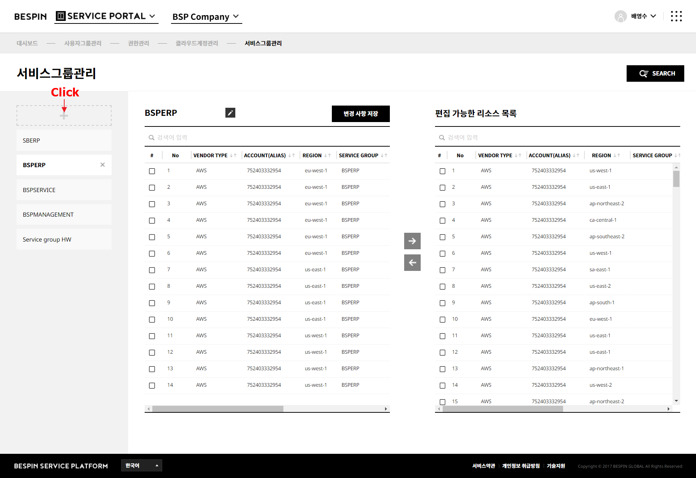
-
"새로운 서비스 그룹 생성" 팝업이 표시됩니다. 이 팝업에서 추가할 서비스 그룹의 이름을 입력 후, [확인] 버튼을 클릭합니다.
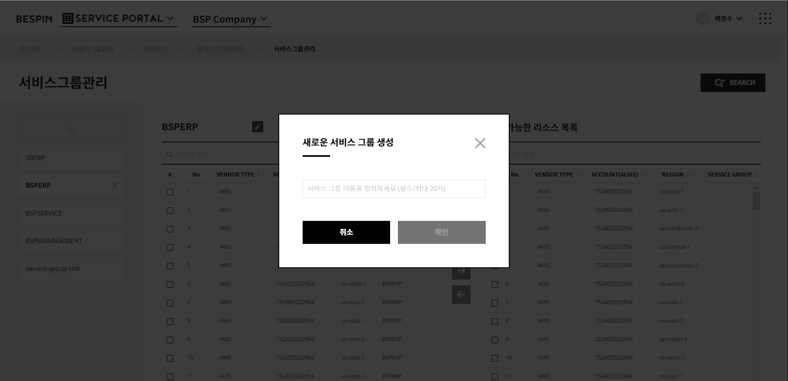
-
서비스 그룹 목록에서 새로운 서비스 그룹이 추가된 것을 확인할 수 있습니다.
추가된 서비스 그룹을 선택하면 선택한 서비스 그룹에 추가된 자원들이 왼쪽 목록에, 모든 자원이 오른쪽 목록에 표시됩니다.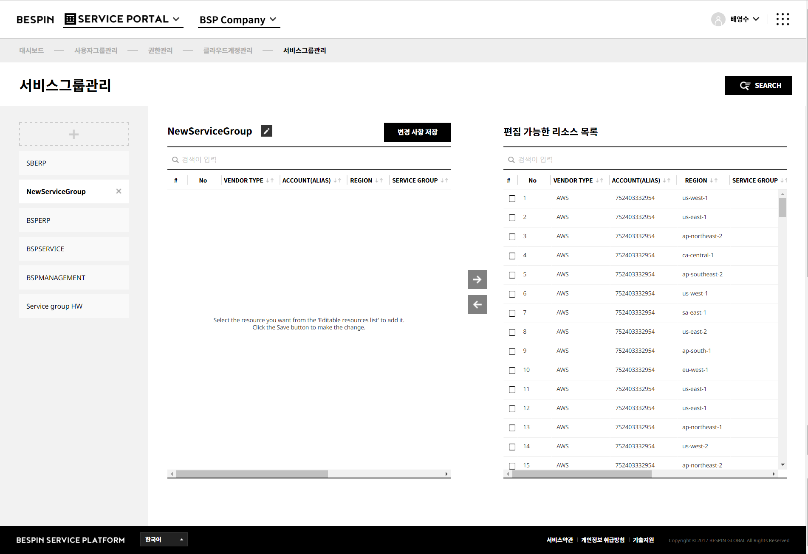 -
오른쪽 자원 목록에서 선택한 서비스 그룹에 추가할 자원들을 선택 후, [{왼쪽 화살표}] 버튼을 클릭해 서비스 그룹에 추가합니다.
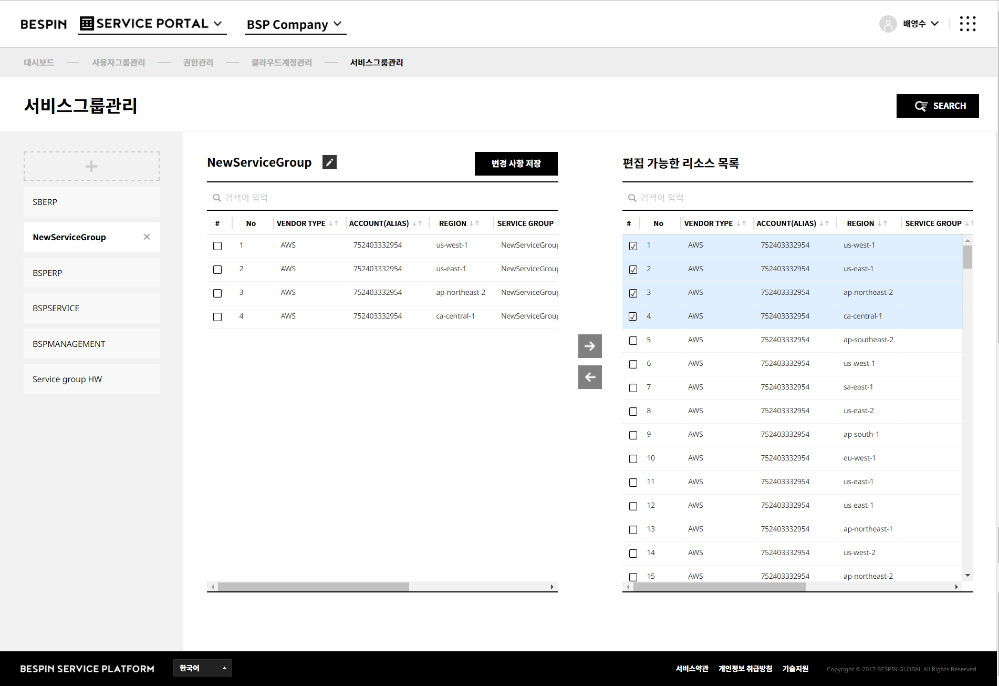
-
또는 검색 기능을 통해 서비스 그룹에 추가할 자원들을 검색할 수 있습니다. [Search] 버튼 클릭 시 검색 조건이 표시되며, 조건을 선택해 자원들을 검색할 수 있습니다.
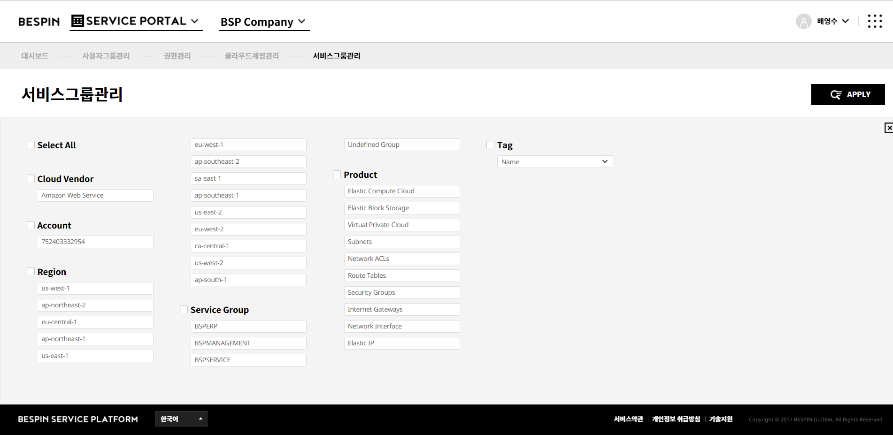
-
[변경사항 저장] 버튼을 클릭해 변경 내용을 저장합니다.
변경 내용이 저장되면 새로운 서비스 그룹의 추가가 완료됩니다.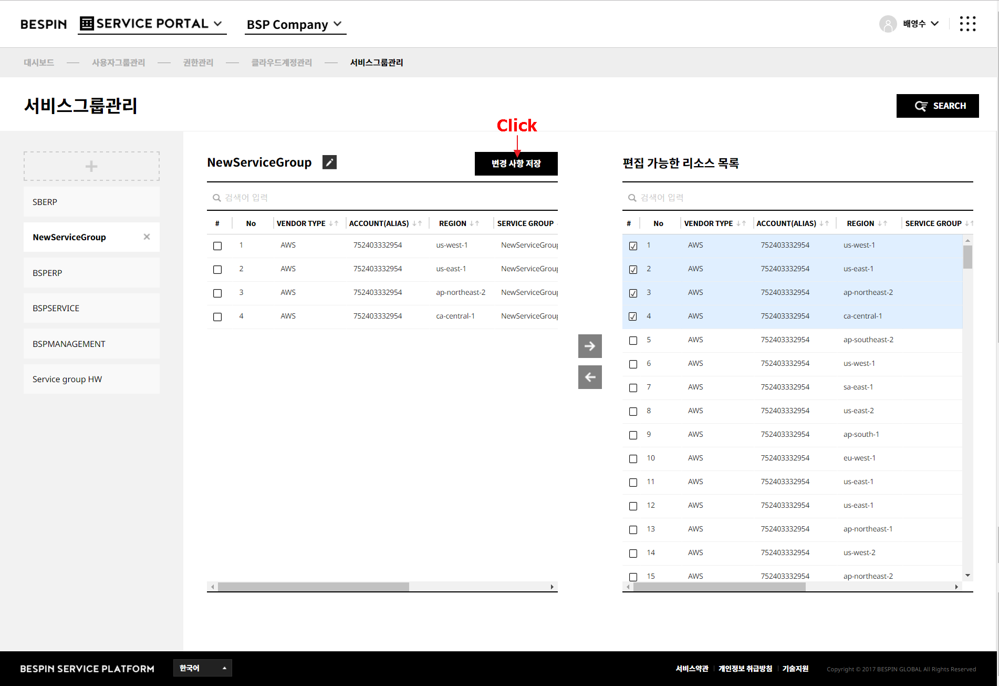
2. 서비스 그룹 편집
생성된 서비스 그룹의 이름을 변경하거나 서비스 그룹에 포함된 자원들을 변경할 수 있습니다.
1.1 서비스 그룹 이름 변경
- 이름을 변경할 서비스 그룹을 선택합니다.
-
서비스 그룹 이름 옆의 [편집] 버튼을 클릭합니다.
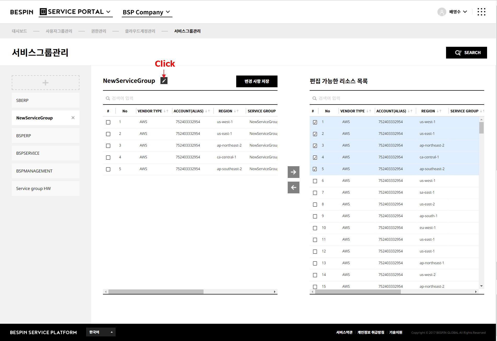
-
서비스 그룹의 이름을 변경하고 [확인] 버튼을 클릭해 변경 내용을 저장하면 이름 변경이 완료됩니다.
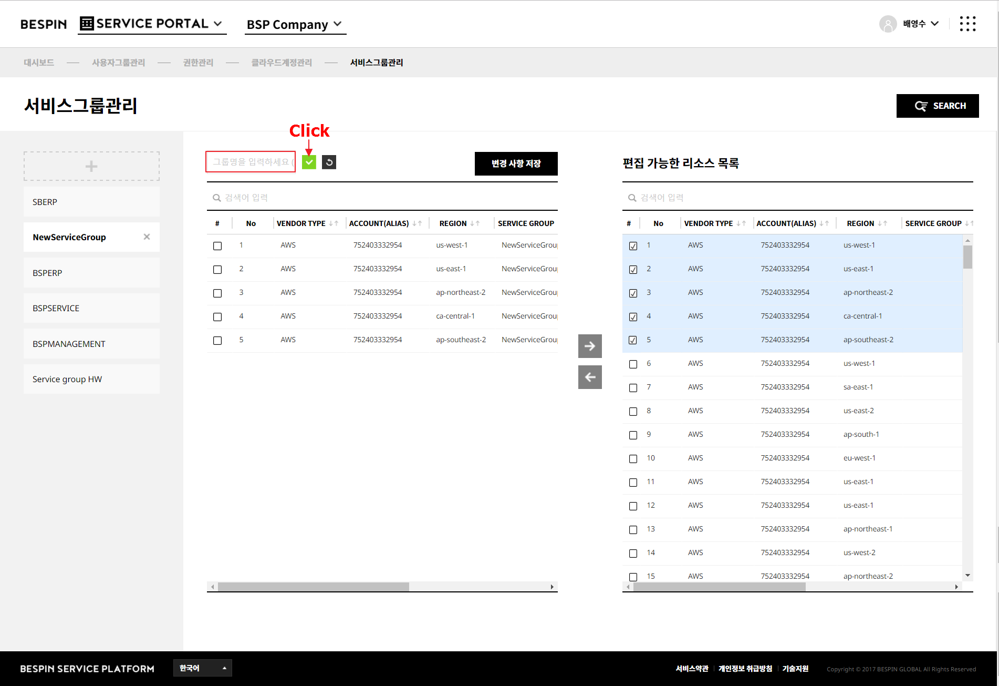
1.2 서비스 그룹의 자원 편집
- 자원을 편집할 서비스 그룹을 선택합니다.
-
왼쪽의 서비스 그룹에 추가된 자원 목록에서 제거할 자원 선택 후, [추가] 버튼을 클릭합니다.
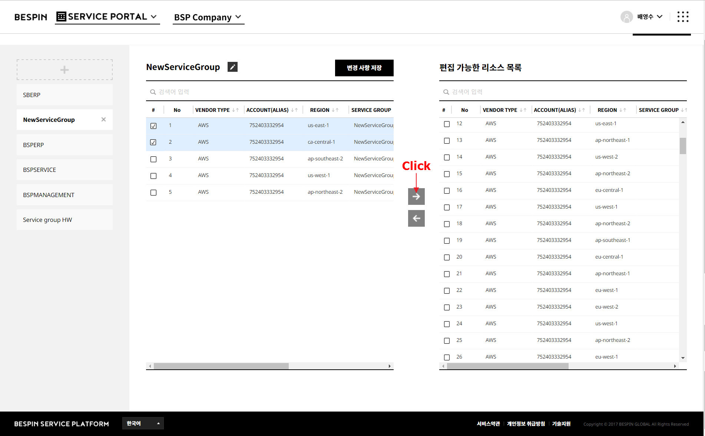
-
오른쪽의 전체 자원 목록에서 서비스 그룹에 추가할 자원 선택 후, [{왼쪽 화살표}] 버튼을 클릭합니다.
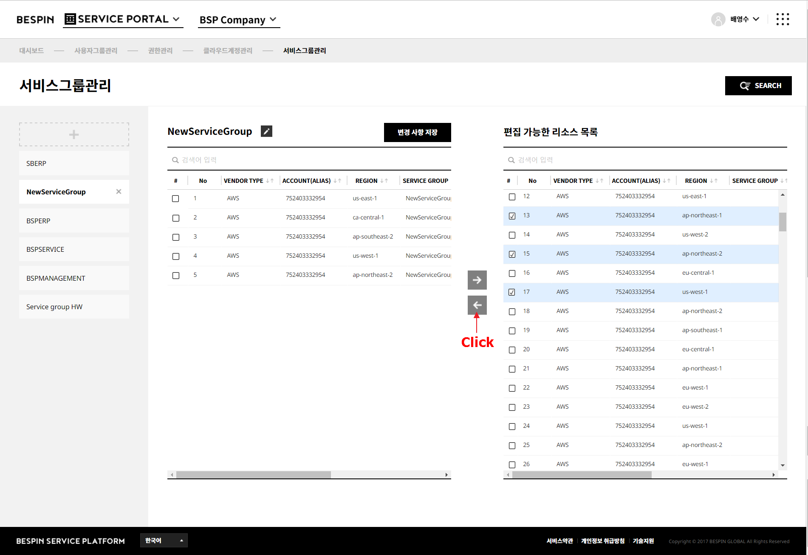
-
[변경사항 저장] 버튼을 클릭해 변경 내용을 저장합니다.
변경 내용이 저장되면 서비스 그룹의 자원 편집이 완료됩니다.
3. 서비스 그룹 삭제
생성된 서비스 그룹을 삭제할 수 있습니다.
- 삭제할 서비스 그룹을 선택합니다.
-
서비스 그룹 이름 옆의 [X] 버튼을 클릭합니다.
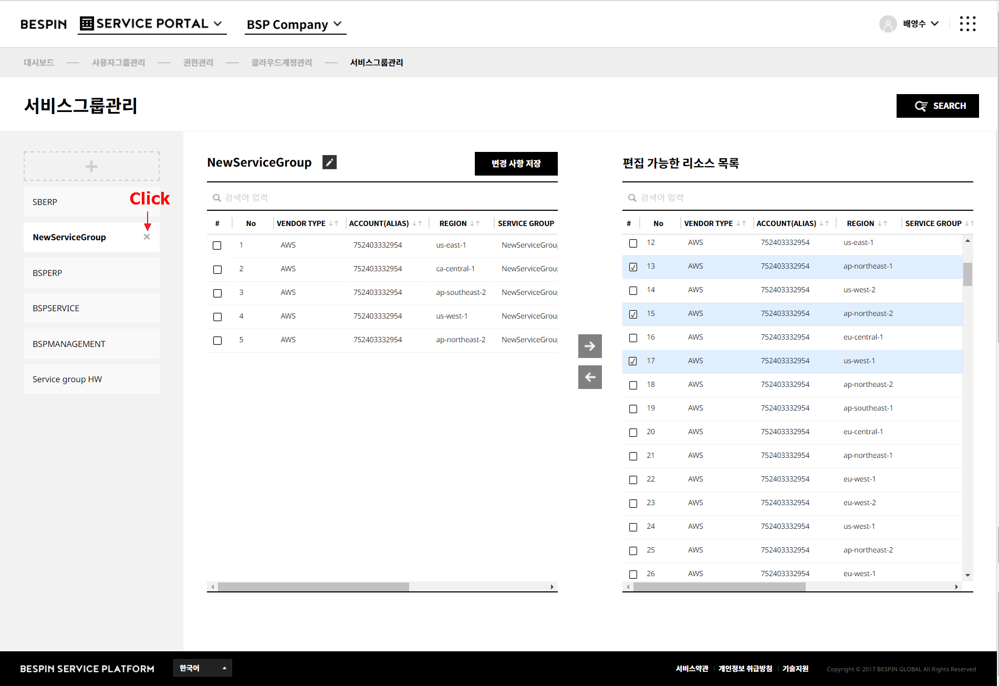
-
"서비스 그룹 삭제 확인" 팝업이 표시됩니다. 팝업에서 [확인] 버튼을 클릭합니다.
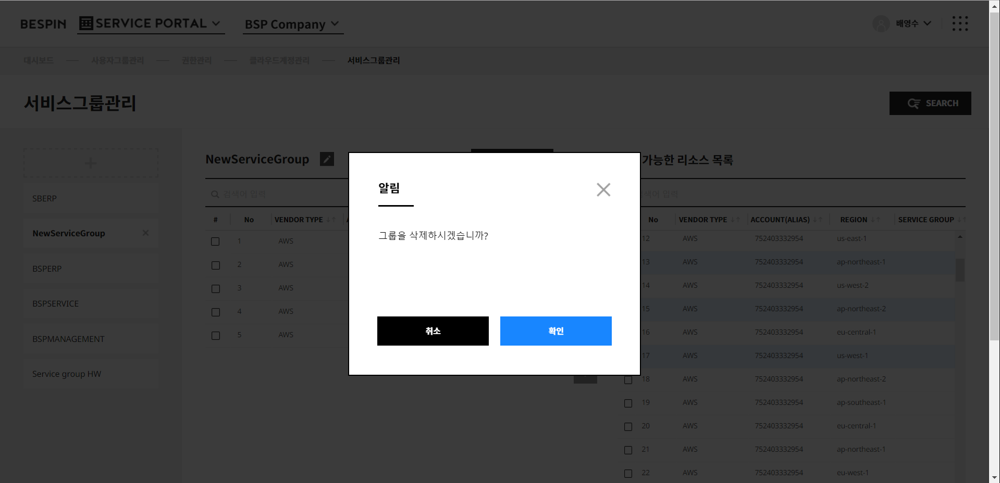
- 서비스 그룹 목록에서 선택한 서비스 그룹이 삭제된 것을 확인할 수 있습니다.